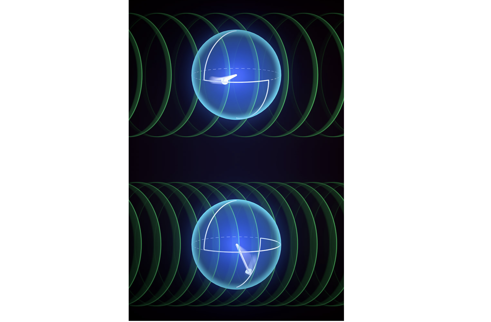

Machine Learning
- We discuss the impact of noise on the effectiveness of reservoir computing.
Reservoir computing is a non-linear recurrent neural network proposed to overcome the gradient vanishing
and exploding problems in deep learning. Using the Information Processing Capacity (IPC), a measure used
to quantify the capacity of a system to learn a function, the authors show that noise strictly decreases
the achievable IPC of a reservoir computer. Using an extended definition of IPC, the impact of the noise
is quantified. The work has implications on improving the robustness of reservoir computing in the presence
of noise.
- Motivated by physical constraints (polynomial depth and polynomial power), and assuming
noisy analog computation, I show that a reservoir computer is necessarily limited in utility. One way to
characterize this is that, when used as a binary classifier, the largest set that can be separated into two
arbitrary labelings grows only polynomially with the system size (despite there being an exponential number
of possible functions). We show, however, that this utility can be recovered in a probabilistic setting.
- In quantum machine learning it is possible to use a quantum circuit as a kernel,
since in general a system of n qubits is represented by a 2^n dimensional Hilbert space, and the dynamics
are given by the exponential of a Hamiltonian which is in general a non-linear map.
Control, Numerical Methods and Optimization
-
There are in general two kinds of errors - systematic errors and random errors. (In the case of quantum computing, these two errors are coherent and incoherent.)
Generally, systematic errors are more pathological, since they tend to accumulate due to correlations, while random errors tend to cancel.
In this work, we demonstrate that
it is possible to use convex optimization to design controls for a quantum computer with randomized errors from controls with systematic errors. Moreover, by formulating the problem
as a convex optimization problem we show it is possible to modify the objective function to favor sparsity (fewer controls to randomize over) and error maps that are amenable to Monte Carlo
simulation.
-
Quantum computers, at the time of writing, suffer from a scaling problem. Ion traps are experimental
devices which use electromagnetic fields to contain charged particles, and have been shown to
be capable of holding hundreds of ions. We use analytical models together with numerical solvers to evaluate
the feasability of using deformable mirrors to address single ions.
-
A primary research focus in quantum machine learning is the quantum approximate optimization algorithm,
which uses a classical computer to optimize a parameterized quantum circuit. The state-of-the-art uses
either surrogate methods, or takes advantage of concentration results for the optimal parameters. In
this project we were constrained by the number of samples we take, and so used both generative (simulated annealing)
and genetic (evolution strategies) methods.

Randomization and Statistical Analysis
- A significant portion of my Ph.D. thesis was spent proving and numerically verifying a characterization
technique for quantum computers that is an extension of the randomized benchmarking in the above module.
-
Finally, my thesis discusses further extensions that uses these results to
estimate the errors under a Markovian (memoryless) error model, using non-Hermitian perturbation
theory.

Asymptotic Characterization
- Sensors are physical devices which accumulate, over time, information about the presence of a signal.
A fundamental task in sensing is the detection of an AC signal. We establish a no free lunch theorem
that demonstrates that performance at one frequency comes at the cost of performance at another
frequency. We further demonstrate that entanglement can be used to exceed the classical limit.
- Reservoir computers are a kind of recurrent neural network, with a single trainable output layer.
I demonstrate that any physical, noisy analog reservoir computer will be limited in its ability to
learn a deterministic set of functions. We show, however, that this is because they are instead able
to learn functions whose outputs are random variables.